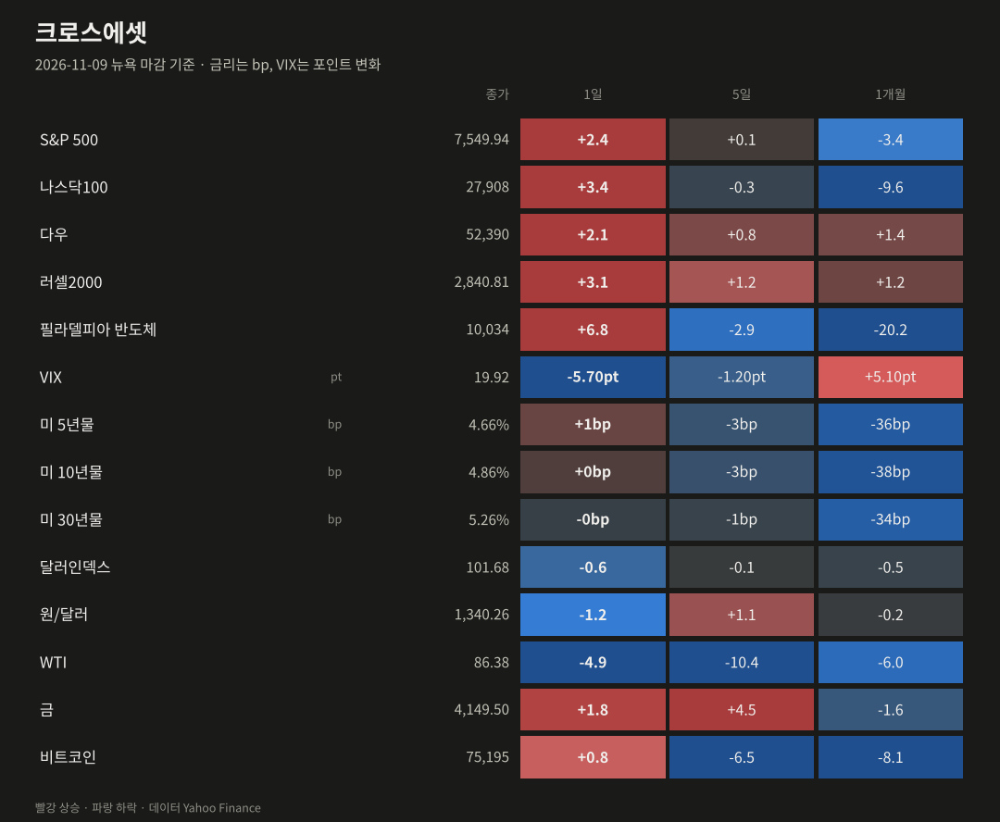
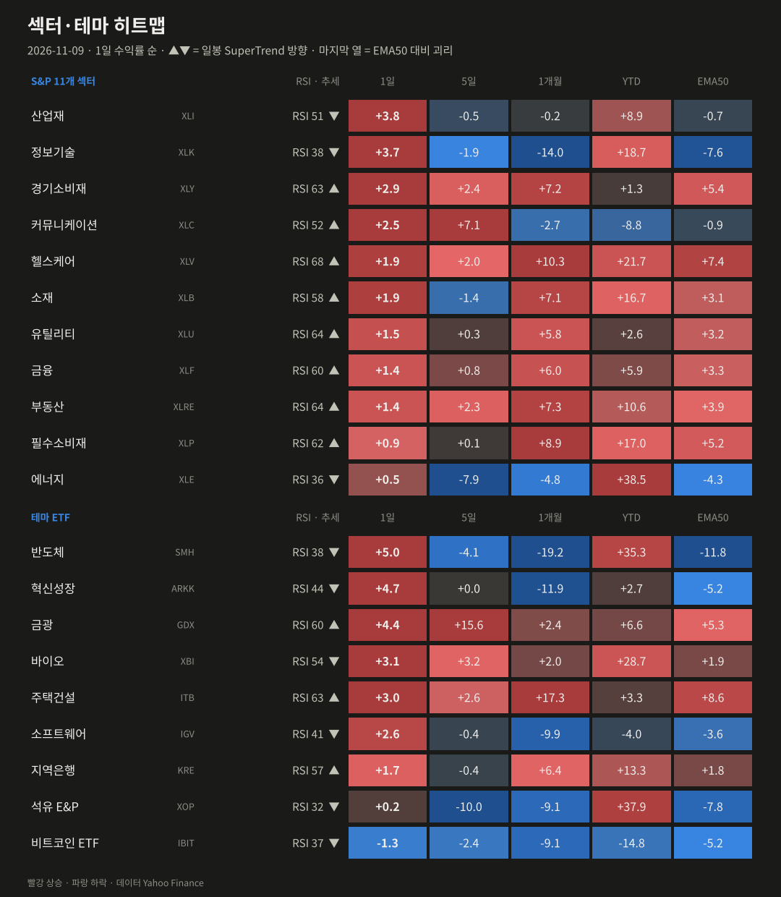
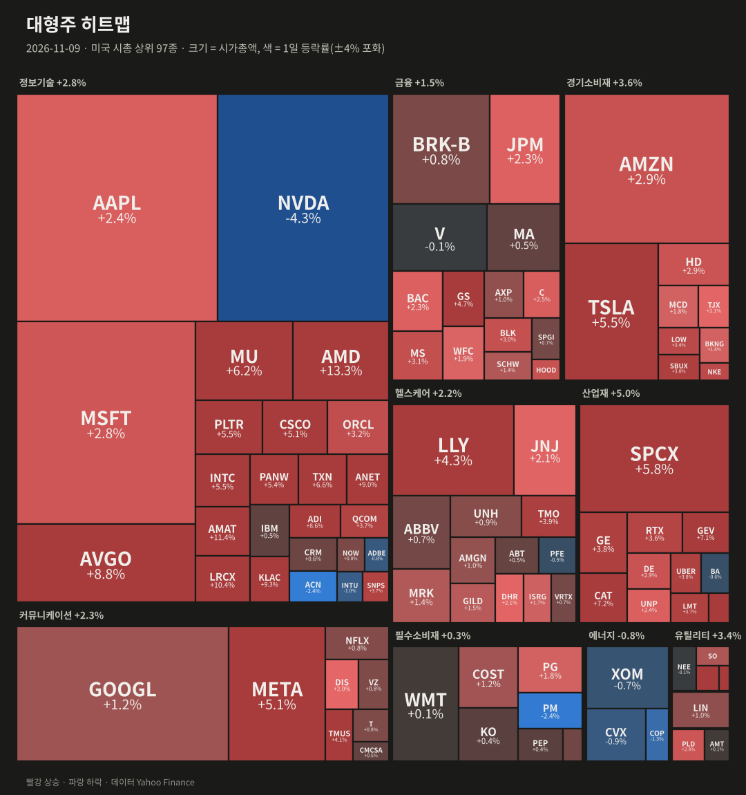
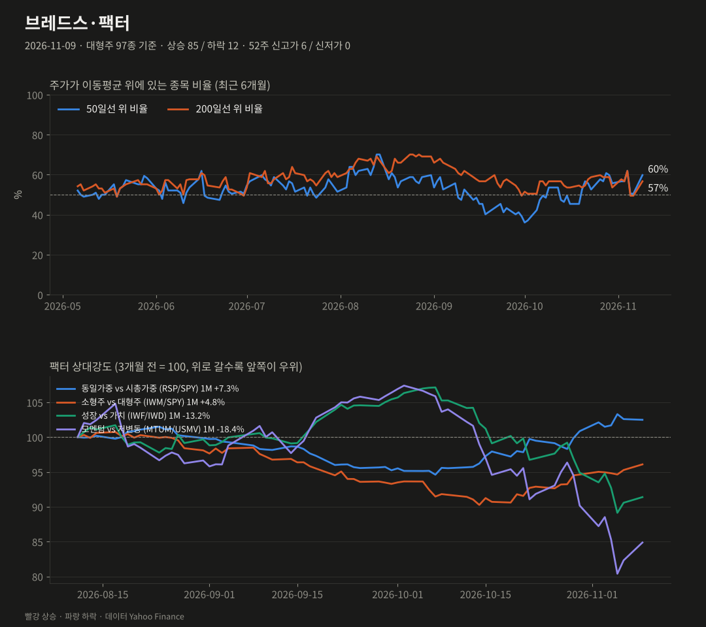
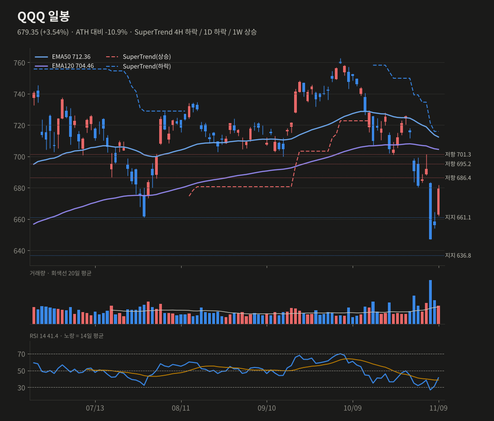
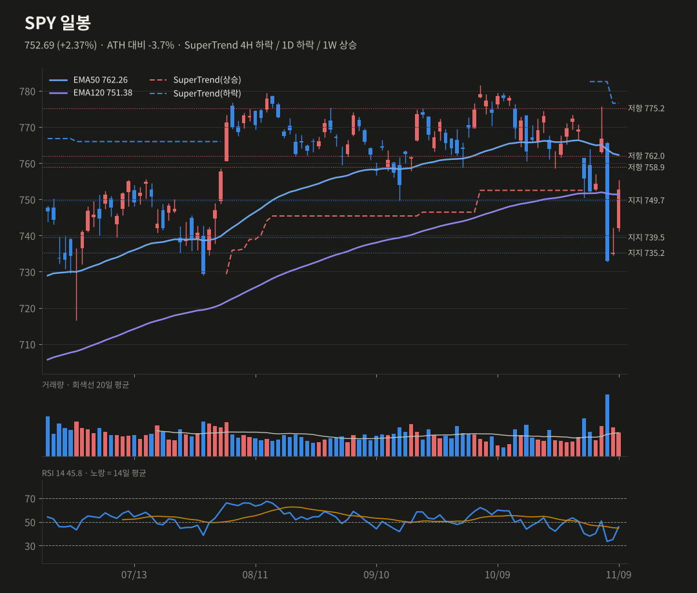
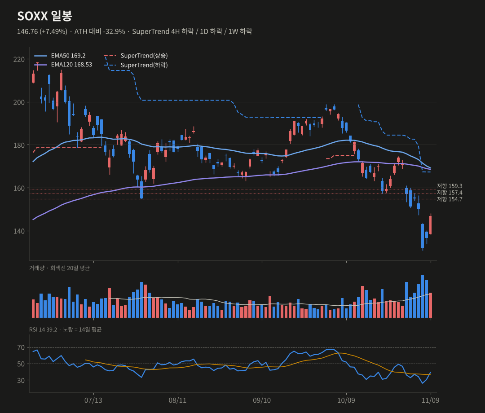
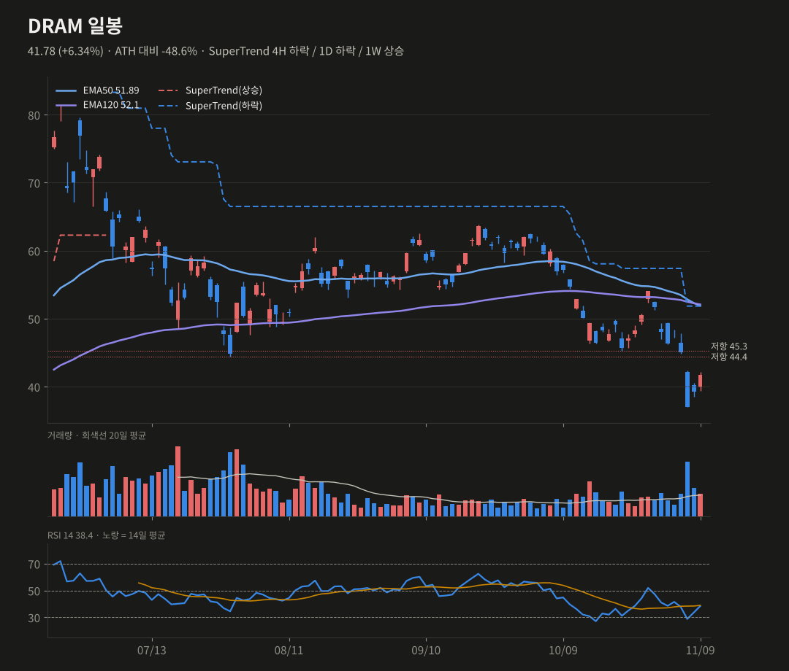

미증시 마감 브리핑
11/9(월) 뉴욕 마감 기준 · 생성 2026-11-10 07:40 KST
유가 하락과 반도체 반등으로 S&P +2.4%, 나스닥100 +3.4%였어요. 오른 종목이 85/97로 폭넓었고, 엔비디아만 −4.3%로 역행했어요.
S&P 5007,549.94+2.35%
나스닥10027,908+3.40%
다우52,390+2.15%
러셀20002,840.81+3.15%
반도체(SOX)10,034+6.85%
VIX19.92-5.70pt
미 10년물4.86%+0.50bp
원/달러1,340.26-1.19%
요약
- 유가 −4.9%, 반도체 +6.9%로 S&P +2.4%였어요. 오른 종목은 85/97로 폭넓었어요.
- 엔비디아는 CEO 관련 이사회 조사로 −4.3%였지만, 영향은 엔비디아에 국한됐어요.
- SPY는 일봉 EMA120을 회복해 스윙 45%예요. QQQ와 SOXX는 아직 되돌림 단계예요.
- 오늘 밤 10월 CPI(22:30 KST)가 반등 지속의 분기점이에요.
종합 판단
선거 후 AI 인프라 투매가 이틀 만에 대부분 되돌려졌어요. 오른 종목 85개에 VIX 19.9까지, 시장 전반의 안도 랠리예요. SPY는 일봉 EMA120을 되찾아 스윙 확률을 회복시켰어요. QQQ와 SOXX는 아직 일봉 추세선 아래라 되돌림 단계로 봐요. 오늘 밤 CPI가 12월 인상 확률을 좌우하며 반등 지속의 분기점이 될 거예요.
선거 후 AI 인프라 투매가 이틀 만에 대부분 되돌려졌어요. 오른 종목 85개에 VIX 19.9까지, 시장 전반의 안도 랠리예요. SPY는 일봉 EMA120을 되찾아 스윙 확률을 회복시켰어요. QQQ와 SOXX는 아직 일봉 추세선 아래라 되돌림 단계로 봐요. 오늘 밤 CPI가 12월 인상 확률을 좌우하며 반등 지속의 분기점이 될 거예요.
무엇이 시장을 움직였나
- 반도체 되돌림 2일째: SOX +6.9%였어요. AMD +13.3%(오펜하이머 '시장수익률 상회' 상향), AMAT +11.4%, LRCX +10.4%, KLAC +9.3%, ANET +9.0%가 올랐어요. 5일 기준으로 QQQ는 선거 후 투매분을 거의 되찾았어요(−0.3%).
- 엔비디아 −4.3%(거래량 3.9배): 젠슨 황 CEO가 외국 정보기관의 표적이 됐다는 보도로 이사회가 독립 조사에 착수했어요. 이사회는 기밀·국가안보 피해는 없다고 보고 신뢰를 유지했어요. 영향은 엔비디아에 국한됐다는 평가가 나왔어요.
- 유가: WTI −4.9%(86.4달러)로 인플레이션 우려가 줄었어요. 금 +1.8%, 달러인덱스 −0.6%예요.
- 변동성: VIX가 19.9로 내려왔어요(−5.7pt). 10년물은 4.86%로 보합이에요. 원/달러는 1,340원으로 1.2% 내렸어요.
- AI 전력: CEG +10.5%, 산업재(+3.8%)가 섹터 1위였어요. 선거 후 빠졌던 AI 인프라 쪽에 매수가 돌아왔어요.

| 자산 | 종가 | 1일 | 5일 | 1개월 |
|---|---|---|---|---|
| S&P 500 | 7549.94 | +2.35% | +0.11% | -3.35% |
| 나스닥100 | 27907.62 | +3.40% | -0.29% | -9.63% |
| 다우 | 52389.75 | +2.15% | +0.78% | +1.42% |
| 러셀2000 | 2840.81 | +3.15% | +1.24% | +1.21% |
| 필라델피아 반도체 | 10033.93 | +6.85% | -2.85% | -20.19% |
| VIX | 19.92 | -5.70pt | -1.20pt | +5.10pt |
| 미 5년물 | 4.659 | +1.1bp | -3.4bp | -36.2bp |
| 미 10년물 | 4.864 | +0.5bp | -3.0bp | -38.0bp |
| 미 30년물 | 5.256 | -0.4bp | -1.3bp | -34.4bp |
| 달러인덱스 | 101.68 | -0.60% | -0.07% | -0.52% |
| 원/달러 | 1340.26 | -1.19% | +1.11% | -0.20% |
| WTI | 86.38 | -4.90% | -10.45% | -5.96% |
| 금 | 4149.5 | +1.83% | +4.53% | -1.58% |
| 비트코인 | 75195.27 | +0.82% | -6.48% | -8.13% |

| 섹터·테마 | 1일 | 5일 | 1개월 | YTD | RSI | 일봉 추세 |
|---|---|---|---|---|---|---|
| 반도체 SMH | +5.05% | -4.11% | -19.21% | +35.3% | 38 | 하락 |
| 혁신성장 ARKK | +4.66% | +0.03% | -11.87% | +2.7% | 44 | 하락 |
| 금광 GDX | +4.41% | +15.55% | +2.44% | +6.6% | 60 | 상승 |
| 산업재 XLI | +3.82% | -0.48% | -0.21% | +8.9% | 51 | 하락 |
| 정보기술 XLK | +3.73% | -1.92% | -14.04% | +18.7% | 38 | 하락 |
| 바이오 XBI | +3.08% | +3.19% | +2.04% | +28.7% | 54 | 하락 |
| 주택건설 ITB | +3.02% | +2.56% | +17.33% | +3.3% | 63 | 상승 |
| 경기소비재 XLY | +2.92% | +2.41% | +7.23% | +1.3% | 63 | 상승 |
| 소프트웨어 IGV | +2.61% | -0.43% | -9.95% | -4.0% | 41 | 하락 |
| 커뮤니케이션 XLC | +2.45% | +7.08% | -2.74% | -8.8% | 52 | 상승 |
| 헬스케어 XLV | +1.91% | +2.02% | +10.26% | +21.7% | 68 | 상승 |
| 소재 XLB | +1.91% | -1.36% | +7.10% | +16.7% | 58 | 상승 |
| 지역은행 KRE | +1.73% | -0.38% | +6.43% | +13.3% | 57 | 상승 |
| 유틸리티 XLU | +1.53% | +0.27% | +5.75% | +2.6% | 64 | 상승 |
| 금융 XLF | +1.45% | +0.75% | +5.96% | +5.9% | 60 | 상승 |
| 부동산 XLRE | +1.45% | +2.29% | +7.28% | +10.6% | 64 | 상승 |
| 필수소비재 XLP | +0.90% | +0.07% | +8.94% | +17.0% | 62 | 상승 |
| 에너지 XLE | +0.52% | -7.90% | -4.82% | +38.5% | 36 | 하락 |
| 석유 E&P XOP | +0.22% | -10.03% | -9.07% | +37.9% | 32 | 하락 |
| 비트코인 ETF IBIT | -1.31% | -2.38% | -9.09% | -14.8% | 37 | 하락 |

| 상승 상위 | 1일 | 거래량(20일 대비) | 하락 상위 | 1일 | 거래량 |
|---|---|---|---|---|---|
| AMD | +13.26% | x1.84 | NVDA | -4.27% | x3.88 |
| AMAT | +11.37% | x1.3 | PM | -2.41% | x1.49 |
| CEG | +10.46% | x1.85 | ACN | -2.35% | x0.63 |
| LRCX | +10.41% | x1.25 | COP | -1.32% | x1.48 |
| KLAC | +9.31% | x1.48 | INTU | -0.96% | x0.73 |
| ANET | +9.00% | x1.36 | CVX | -0.86% | x1.08 |

대형주 97종: 상승 85 / 하락 12 · 50일선 위 59.8% (전일 50.5%, 5일 전 56.7%) · 200일선 위 56.7% · 52주 신고가 6 / 신저가 0
오른 종목 85, 내린 종목 12로 폭넓은 랠리였어요. SMA50 위 종목 비율은 50.5%에서 59.8%로 회복했고, 52주 신고가도 6개 나왔어요. 동일가중과 시총가중이 거의 같이 올랐어요.
| 팩터 스프레드 | 1일 | 5일 | 1개월 |
|---|---|---|---|
| 동일가중 vs 시총가중 (RSP/SPY) | -0.10% | +0.36% | +7.28% |
| 소형주 vs 대형주 (IWM/SPY) | +0.84% | +1.13% | +4.76% |
| 성장 vs 가치 (IWF/IWD) | +0.90% | -2.27% | -13.19% |
| 모멘텀 vs 저변동 (MTUM/USMV) | +3.12% | -2.69% | -18.39% |
기술적 분석 · 확률
TradingView 설정과 맞춘 지표(EMA50·EMA120, SuperTrend ATR20×4, RSI14, MACD 12/26/9). 확률은 차트 기반 추정치예요.
QQQ 679.35 +3.54%
SuperTrend 4H 하락 / 1D 하락 / 1W 상승 · RSI 41.37
단기 반등 60% (+5) · 스윙 상승 35% (+5)
주봉 EMA50(671.7) 위로 복귀했고, 일봉 히스토그램이 상승 전환했어요(−6.64 → −4.98). 4H RSI는 43.8이에요. 일봉 SuperTrend(715.9)와 EMA120(704.5)이 위에 있어, 지금은 추세 회복이 아니라 되돌림 단계예요.
상방 686.4 돌파 → 695.3, 701.3~705.5
하방 671.7 이탈 → 661.1
SuperTrend 4H 하락 / 1D 하락 / 1W 상승 · RSI 41.37
단기 반등 60% (+5) · 스윙 상승 35% (+5)
주봉 EMA50(671.7) 위로 복귀했고, 일봉 히스토그램이 상승 전환했어요(−6.64 → −4.98). 4H RSI는 43.8이에요. 일봉 SuperTrend(715.9)와 EMA120(704.5)이 위에 있어, 지금은 추세 회복이 아니라 되돌림 단계예요.
상방 686.4 돌파 → 695.3, 701.3~705.5
하방 671.7 이탈 → 661.1
SPY 752.69 +2.37%
SuperTrend 4H 하락 / 1D 하락 / 1W 상승 · RSI 45.81
단기 반등 60% (+10) · 스윙 상승 45% (+10)
일봉 EMA120(751.4)을 종가로 되찾아 11/5 레짐 이탈이 무효가 됐어요. 4H·일봉·주봉 히스토그램이 모두 상승 전환했고, 주봉 RSI도 50을 회복했어요. 일봉 SuperTrend는 아직 하락(776.6)이에요.
상방 758.9 돌파 → 762.3(EMA50), 775.2
하방 749.7 이탈 → 739.5
SuperTrend 4H 하락 / 1D 하락 / 1W 상승 · RSI 45.81
단기 반등 60% (+10) · 스윙 상승 45% (+10)
일봉 EMA120(751.4)을 종가로 되찾아 11/5 레짐 이탈이 무효가 됐어요. 4H·일봉·주봉 히스토그램이 모두 상승 전환했고, 주봉 RSI도 50을 회복했어요. 일봉 SuperTrend는 아직 하락(776.6)이에요.
상방 758.9 돌파 → 762.3(EMA50), 775.2
하방 749.7 이탈 → 739.5
SOXX 146.76 +7.49%
SuperTrend 4H 하락 / 1D 하락 / 1W 하락 · RSI 39.19
단기 반등 55% (+5) · 스윙 상승 30% (+5)
+7.5%로 이틀간 11% 반등했고, 일봉 히스토그램도 상승 전환했어요. 다만 주봉 MACD선이 0선 아래로 내려가 중기 모멘텀은 약해요. 4H SuperTrend(154.7)가 첫 저항이에요.
상방 154.7 돌파 → 159.3, 162.2(4H EMA50)
하방 140 이탈 → 131.9
SuperTrend 4H 하락 / 1D 하락 / 1W 하락 · RSI 39.19
단기 반등 55% (+5) · 스윙 상승 30% (+5)
+7.5%로 이틀간 11% 반등했고, 일봉 히스토그램도 상승 전환했어요. 다만 주봉 MACD선이 0선 아래로 내려가 중기 모멘텀은 약해요. 4H SuperTrend(154.7)가 첫 저항이에요.
상방 154.7 돌파 → 159.3, 162.2(4H EMA50)
하방 140 이탈 → 131.9
DRAM 41.78 +6.34%
SuperTrend 4H 하락 / 1D 하락 / 1W 상승 · RSI 38.44
단기 반등 55% (+5) · 스윙 상승 30%
+6.3%로 4H RSI가 30 위로 올라오고 일봉 히스토그램이 반등했어요. 주봉 MACD선은 0선 아래로 내려갔어요. 44.4~45.3 매물대와 4H SuperTrend(46.2)가 저항이에요.
상방 44.4 돌파 → 46.2, 48.8
하방 38.5(주봉 EMA120) 이탈 → 37.0
SuperTrend 4H 하락 / 1D 하락 / 1W 상승 · RSI 38.44
단기 반등 55% (+5) · 스윙 상승 30%
+6.3%로 4H RSI가 30 위로 올라오고 일봉 히스토그램이 반등했어요. 주봉 MACD선은 0선 아래로 내려갔어요. 44.4~45.3 매물대와 4H SuperTrend(46.2)가 저항이에요.
상방 44.4 돌파 → 46.2, 48.8
하방 38.5(주봉 EMA120) 이탈 → 37.0




일정
- 11/10 10월 CPI(08:30 ET, 한국 22:30)
- 엔비디아 이사회 조사 경과
- 12/9 FOMC
출처
- Nvidia Falls in the Stock Market Today Live, November 9, 2026, as Other Tech Stocks Rally (StockTitan)
- Stock market today: Nasdaq surges despite Nvidia stock slide (Yahoo Finance)
- Wall St jumps back as oil slide eases inflation worries; Nvidia slumps (Reuters via Kitco)
데이터 Yahoo Finance·Nasdaq. 색은 한국식(빨강 상승·파랑 하락). 투자 판단의 참고 자료예요. 지난 브리핑